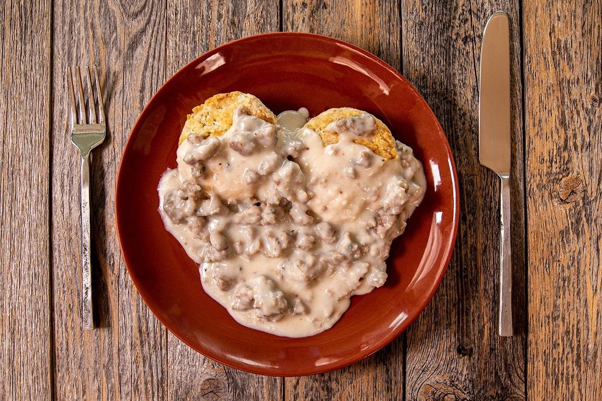

Home
Sawmill Gravy

Description
Sawmill gravy is a classic Southern comfort food that pairs perfectly with biscuits, fried chicken, or mashed potatoes.
This rich and creamy gravy is made from sausage drippings and milk, creating a savory sauce that's both hearty and flavorful.
It's a simple yet delicious addition to any breakfast or dinner table.
Ingredients
- ½ cup Sausage drippings
- ¼ cup All-purpose flour
- 2 cups Milk
- to taste Salt
- to taste Black pepper
Steps
- Heat sausage drippings in a skillet over medium heat.
- Whisk in flour and cook until golden brown.
- Gradually whisk in milk until smooth.
- Cook until thickened, stirring constantly.
- Season with salt and pepper to taste.